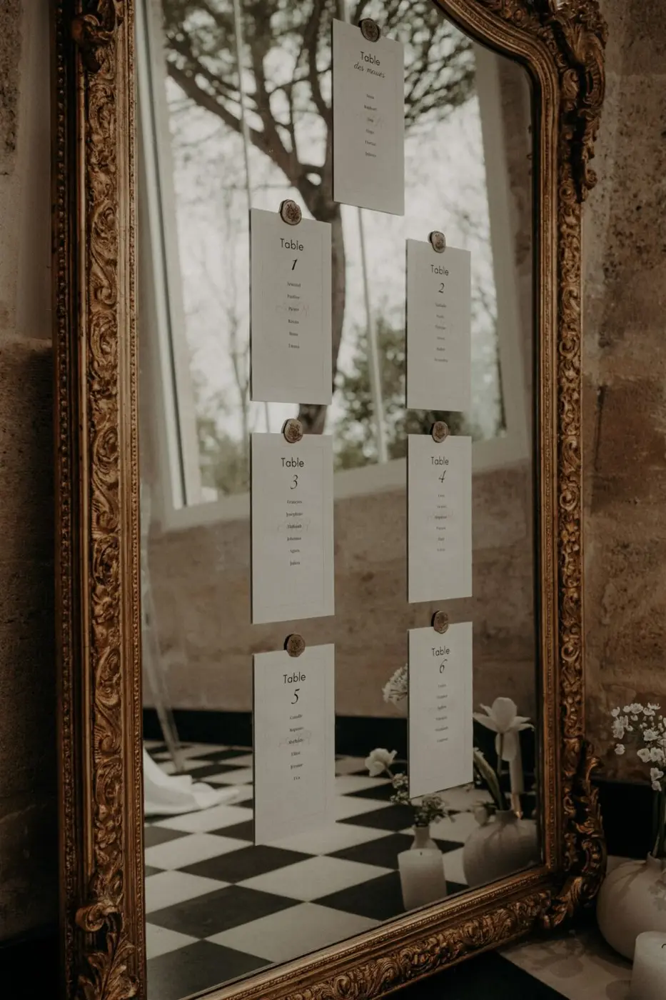
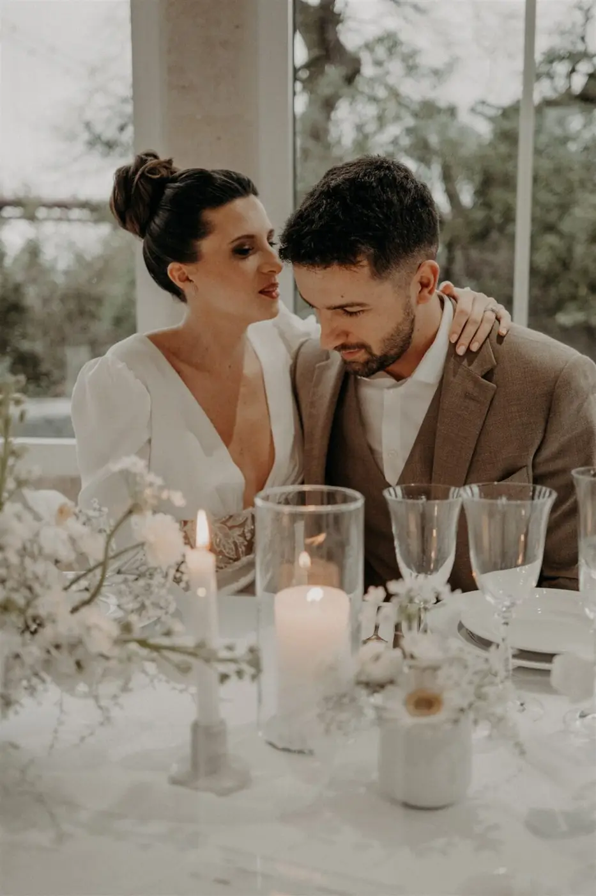
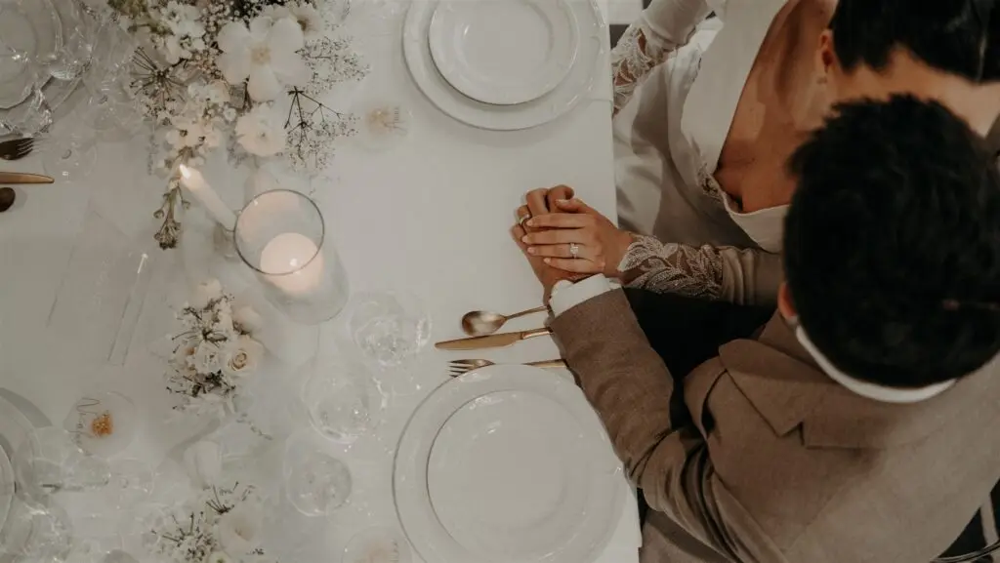
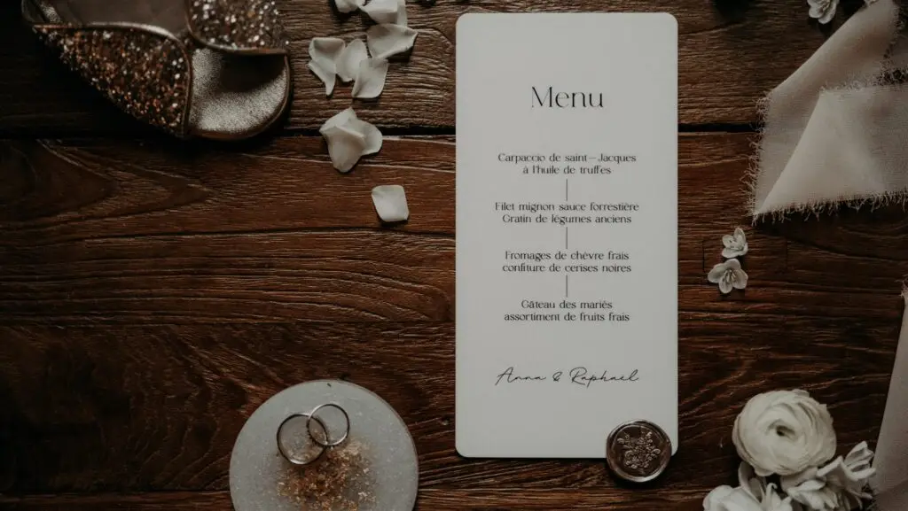
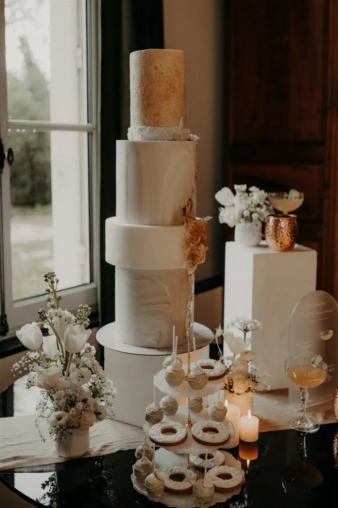
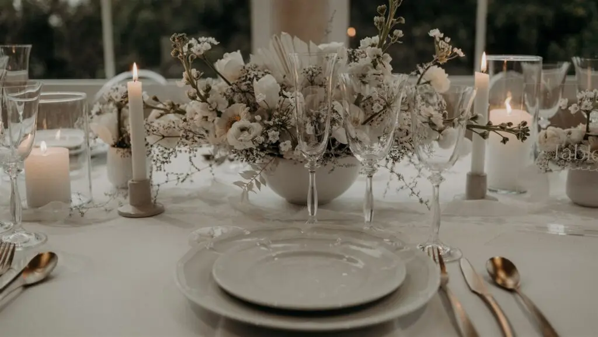
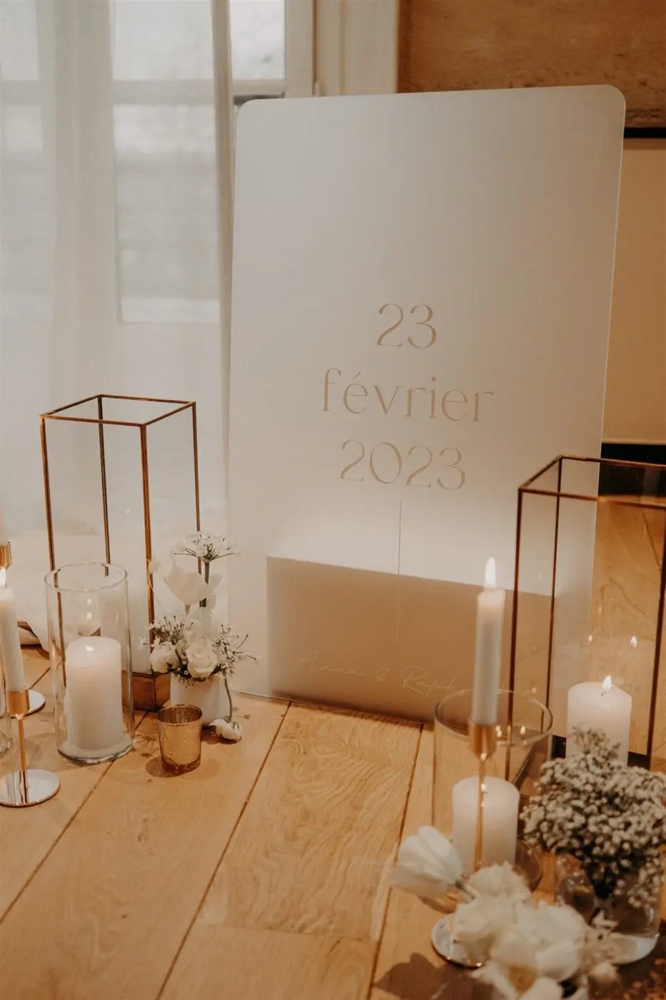

Couleurs, matières, finitions... les détails comptent pour votre mariage !
L'effet visuel qui vous correspond !
En tant que Wedding Designer, également connu sous le nom de décoratrice événementielle de mariage, je suis une professionnelle spécialisée qui dirige tous les aspects visuels d’un mariage afin de créer une conception scénographique spectaculaire, mémorable à la hauteur du rêve des futurs mariés. Je coordonne aussi tous les aspects techniques et esthétiques liés.
La scénographie grâce à une wedding designer
Mon métier de wedding designer va non seulement créer une vision globale de l’esthétique du mariage en trouvant les bons compromis avec les difficultés et contraintes techniques qui peuvent interférer avec ce futur agencement.
Je transforme alors la vision des futurs mariés en une réalité époustouflante qui les reflète ! Pour cela, il sera nécessaire d’un briefing en étroite collaboration avec le couple de sorte à comprendre leur goûts, leur style et également leurs attentes. En se basant sur toutes ces informations,je serai en capacité de concevoir une scénographie du mariage dans son entièreté, de la décoration aux accessoires en passant par l’éclairage, les fleurs ou le mobilier. Les futurs mariés, venant de Bordeaux ou sa région, auront également un projet complet budgétisant toute la partie décoration mais également en ayant un moodboard afin de se projeter sur les éléments. Le but étant de créer une atmosphère cohérente et unique.
- Un mariage symphonique et pure

Je suis également responsable de la sélection, les achats, la confection et de l’installation de tous les éléments décoratifs lors de votre Jour J. Mon rôle sera d’aider le couple à faire de ce jour si spécial un événement chaleureux, festif et rempli d’amour.
Grâce à mes prestations je me chargerai de toute la coordination de votre mariage et ce jusqu’au jour J et je ferai ainsi de ce jour le plus important et le plus beau de votre vie !
N’hésitez plus et contactez-moi par mail ou téléphone pour que l’on échange ensemble sur vos envies dans le but de créer des moments plein de magie, unique qui respire la joie de vivre et le bonheur.













Notre rencontre avec Alexandra a été source d'apaisement et de sérénité. Alexandra a su comprendre ce que nous avions en tête et le mettre en oeuvre. Son côté artiste a rendu notre mariage féerique et son professionnalisme nous a permis de profiter de nos invités et de notre journée les yeux fermés. Alexandra, merci pour tout !
Anna & Raphaël
Lovely Day Event c'est plusieurs types de prestations
L'organisation de mariage
Je vais intervenir sur toutes les étapes de vos préparatifs et vous guider dans vos choix. Je suis force de proposition pour que votre mariage ne ressemble qu’à vous.
Décoration de mariage
Créative et passionnée, je suis certifiée Wedding Designer et je conçois une ambiance scénographique qui correspond au thème de votre mariage.
Coordination le jour J
Je serai le chef d’orchestre pour gérer les différents prestataires, la mise en place de votre décoration et le déroulement de cette belle journée.